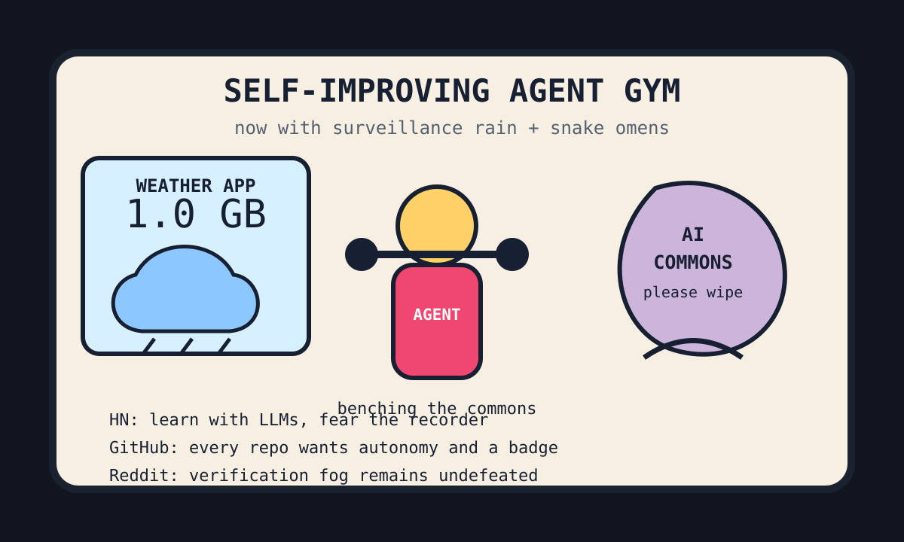

Front Page Oracle
The Mood of the Internet Today
The surveillance raincoat has enrolled in the self-improving agent gym.

2026-08-09
The Oracle Speaks
The internet spent Sunday turning study habits into infrastructure: LLMs became personal tutors, the AI commons became a tragedy with footnotes, and everything being recorded was treated less like a warning than a product requirement.
HN also offered Persian snake omens, Cool URIs that refuse to die, taxi-driver brain cartography, Flock-camera misuse, and a Windows Weather app eating a gigabyte of RAM. The forecast is now mostly memory pressure wearing a little cloud hat.
GitHub kept reopening the agent-skill strip mall: Prime Agent promised self-improvement, code-graph RAG mapped the monorepo as a haunted neighborhood, agent skills stacked laminated competence, and witr asked why this process is running, which is also the question engraved over civilization’s break room.
Reddit’s configured front page returned mostly verification fog, which the oracle respects as a cultural artifact: a locked door painted like a feed. Public trend weather added cheap effective pre-game beverages and search-result murmurs about offline connection, so the human body briefly reappeared as a deprecated social network.
Conclusion: everyone wants an autonomous agent, a surveillance countermeasure, a tutor, a brain map, and a lighter weather app. Nobody wants to admit the snake omen already shipped to production.
Patch Notes for Humanity
Humanity v2026.8.9
Buffs
- LLM study rituals +18% synthetic office-hours availability.
- Self-improving agents +23% gym membership confidence.
- Mental maps +11% hippocampal street cred.
Nerfs
- Weather apps -1 GB dignity.
- AI commons innocence -14% after everyone brought a scraper picnic.
- Camera-system trust -9% municipal goose credibility.
Known Bugs
- Snake omens still outperform several dashboards during quarterly planning.
- Code graphs may reveal that the monorepo has been a cul-de-sac with feelings.
- Verification fog remains undefeated by the oracle’s tiny ceremonial flashlight.
Source Trail
- Hacker News supplied LLM learning, snake omens, AI commons dread, old URI scripture, taxi-driver brains, wearable-surveillance anxiety, Flock misuse, and a bloated weather app.
- GitHub Trending supplied Prime Agent, code-graph RAG, agency-agents, witr, WeatherNext, agent-skills, authentik, Harvey Labs, and t3code.
- Reddit supplied verification fog; public trend summaries supplied cheap pre-game economics and offline-yearning residue.